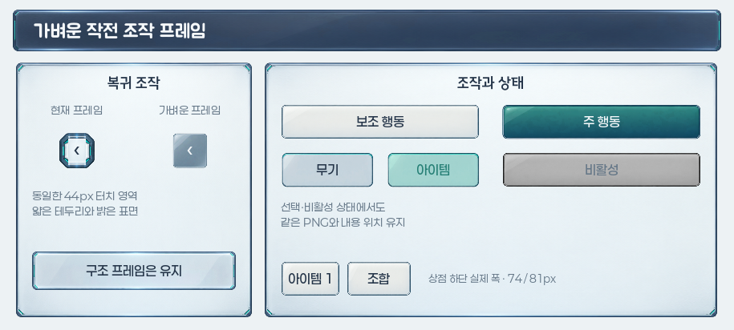

승인 후 실제 적용 · Godot 런타임 캡처
짧은 조작은 가볍게 · 실제 구현 결과
승인하신 PNG 4종을 타이틀·일반 화면의 뒤로가기·게이트24에 연결했습니다. 아래는 시안이 아닌 실제 게임 화면 클래스를 저장과 전투 시뮬레이션 없이 렌더링한 결과입니다.
타이틀
로고 면을 작전 정보판으로 맞추고, 이어하기·새로하기에 얇은 청록·아이보리 버튼을 연결했습니다.
 915×412 · 실제 런타임 화면
915×412 · 실제 런타임 화면진행 중인 게임 없음 · 시작하기

공통 뒤로가기
전용 정사각형 유리 PNG와 44px 조작 영역을 사용합니다. 카드·상세 정보·배치는 유지합니다.
 915×412 · 실제 런타임 화면
915×412 · 실제 런타임 화면844×390

게이트24 · 무기
상단 무기·아이템·리롤의 보이는 프레임을 높이 30px로 줄여 제목 범위 안에 맞췄습니다. 터치 영역과 글자 크기는 유지합니다.
 915×412 · 실제 런타임 화면
915×412 · 실제 런타임 화면승인된 소재 4종

소재판은 승인한 시안 기록이며, 위 게임 화면은 실제 연결 결과입니다. 큰 정보창과 팝업·상점의 전용 진열은 유지했습니다.